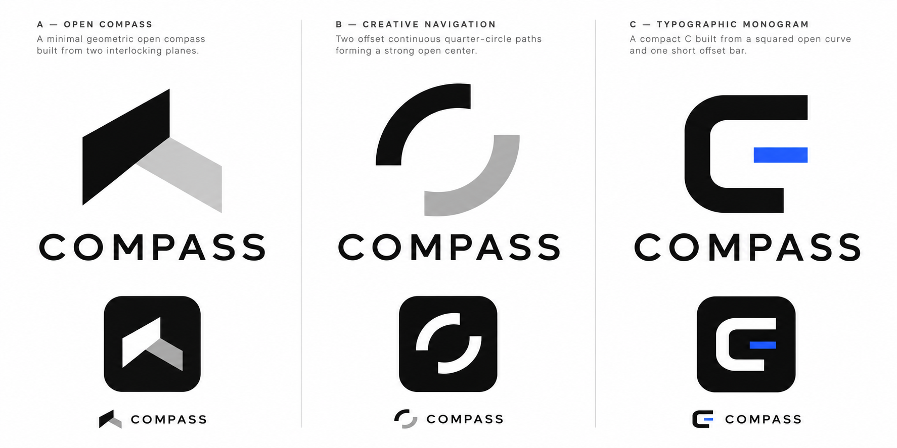

COMPASS / Identity studies
A clearer sense
of direction.
Fold is the selected identity. Earlier alternatives remain below.
A · Fold
COMPASS
Two planes, one direction. The favicon uses a reinforced small-size cut.
Selected identityB · Offset
COMPASS
An open center and two deliberate moves. Clear in one color, with enough weight for a small interface symbol.
Earlier alternativeC · Index
COMPASS
A compact C and an independent cursor. Strong at small sizes, though less distinctive than the open path.
Offset — earlier exploration.
COMPASS
Wordmark studyApp · Social avatar

Dock icon conceptFavicon · 16 px
AI visual research

Visual research only. Production candidates above are original hand-authored SVGs.
Identity studies · Fold selected · Back to COMPASS